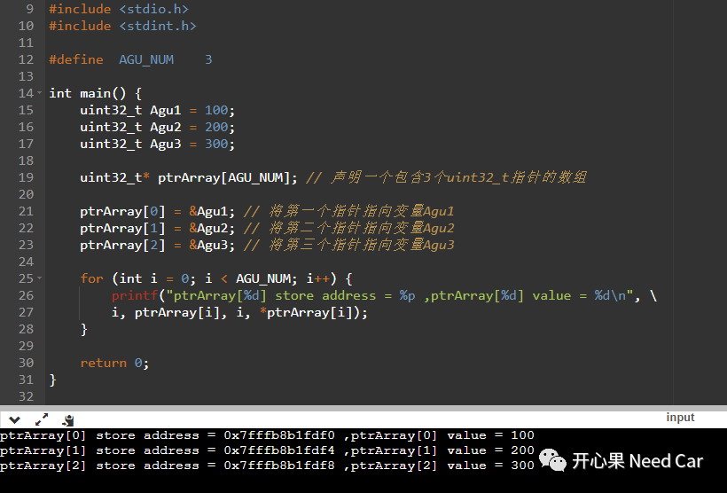
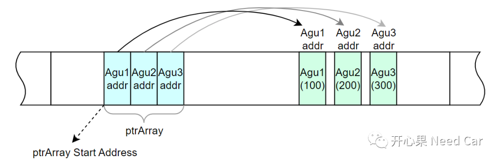
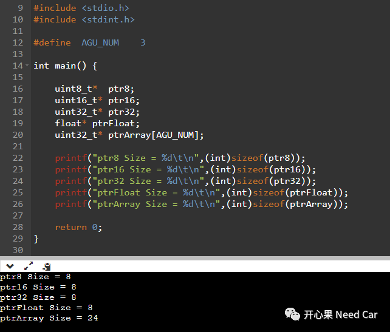
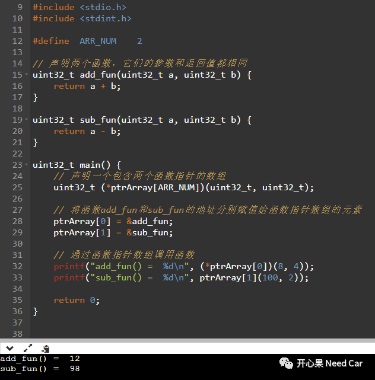

"工欲善其事，必先利其器"，搞汽车电子也是一样的道理。如果我们想开发出足够鲁棒的程序，必须先扎实自己的语言基本功。本文，聊一聊指针数组。
如上定义可以看出，首先，指针数组是一个数组，其次，数组中的每一个元素都是指针。既然是指针，就会指向内存中的某个位置或者对象。因此，指针数组可以用来存储多个指针，用于指向不同的内存位置或者对象。在C的嵌入式开发中，往往使用结构体（struct）去描述对象，所以，使用指针数组去存储这些对象的位置，更利于数据对象的管理。
（一）指针数组示例
先通过一个C语言指针数组示例，了解一下指针数组的声明和使用，如下所示：

如上代码中，声明了一个包含3个uint32_t类型的指针数组：ptrArray。数组内的3个指针元素分别指向参数Agu1地址、Agu2地址、Agu3地址，示意如下：

在程序中，如果找到内存中的有效地址，即可获取该地址上的数据。程序中，定义一个指针变量的时候，意味着这个指针变量也将占用一定的内存空间。那么，不同类型的指针变量所占用的内存空间大小是否一样？指针变量占用内存空间的大小与什么有关？对于这两个问题的答案，我们先看一下如下程序：
如上程序，可以看出，不管定义何种类型的指针变量，所占用的空间大小均为8 Byte。也就是说：即使指针变量的类型不同，指针变量所占用的内存大小固定（eg：4 Byte或者8 Byte）。
为什么如上的程序中，所有的指针变量占用的空间大小都是8 Byte呢？这与使用的芯片地址总线带宽有关。芯片地址总线的宽度决定了CPU寻址的内存空间大小，因此，指针变量的大小通常与地址总线的宽度相匹配。如上程序，在64 Bit带宽的PC（Personal Computer）机上运行，因此，指针变量占用的内存空间为8 Byte。而汽车级芯片中，常见的CPU寻址宽度为32 Bit，因此，在32位的芯片中，定义指针变量时，占用的内存空间均为4 Byte。
- 多维数组：使用指针数组指向多个数组，便于数组的管理和操作；
- 函数指针数组：使用指针数组存储不同的函数指针，以便于调用不同的函数；
- 字符串数组：使用指针数组存储多个字符串，以便于字符串的操作；
函数指针数组也是一个数组，数组中的每个元素用来存放函数的入口地址，通过函数指针数组可以实现多个函数的管理，即：根据条件的不同，实现不同函数的调用。

如上，声明一个函数指针数组ptrArray。ptrArray中，分别存储add_fun()和sub_fun()函数地址。如此，即可使用ptrArray调用两个函数。
提示：ptrArray在调用add_fun()和sub_fun()函数时，使用了两种写法，功能等价。https://onlinegdb.com/jkISDZO5S
点击下方关注，一起聊聊Autosar/嵌入式，如果需要，联系作者进群，给你更专业的解答